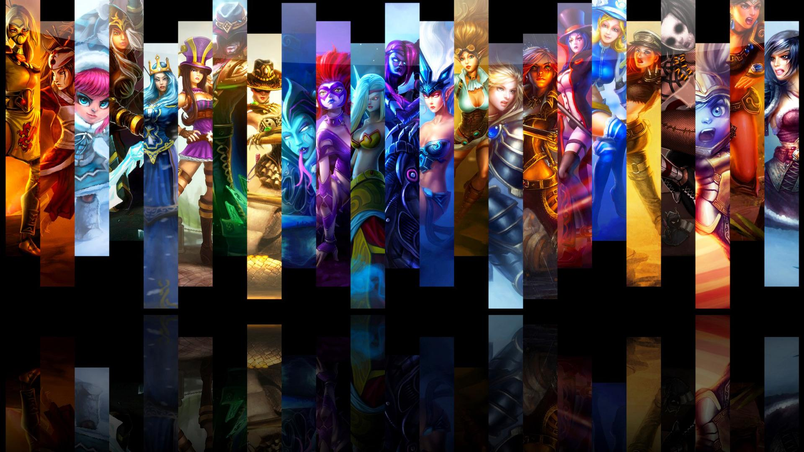

《英雄联盟》（简称LOL）是由美国拳头游戏（Riot Games）开发、中国大陆地区腾讯游戏代理运营的英雄对战MOBA竞技网游。 游戏里拥有数百个个性英雄，并拥有排位系统、符文系统等特色养成系统。 《英雄联盟》致力于推动全球电子竞技的发展，除了联动各赛区发展职业联赛、打造电竞体系之外，每年还会举办“季中冠军赛”“全球总 决赛”“All Star全明星赛”三大世界级赛事，形成了自己独有的电子竞技文化。 2018年，《英雄联盟》加入亚运会。2019年11月21日，英雄联盟发布《关于违规玩家荣誉等级调低的公告》，违规玩家将被调低荣誉等 级，取消其赛季奖励资格。2020年7月，英雄联盟开启未成年人防沉迷模式，而未成年职业选手则会拥有独立赛事账号 。
符文之地与魔法
在符文之地，魔法就是一切 ， 瓦洛兰大陆 在这里，魔法不只是一种神秘莫测的能量概念。它是实体化的物质，可以被引导、成形、塑造和操作。符文之地的魔法拥有自己 的自然法则。源生态魔法随机变化的结果改变了科学法则。 符文之地有数块大陆，不过所有的生命都集中在最大魔法大陆——瓦洛兰。瓦洛兰大陆居于符文之地中心，是符文之地面积最大的大 陆。 被祝福的符文之地上有大量源生态魔法能量，而此地居民可以触及其中的能量。符文之地的中心区域集中了数量巨大的源生态魔 法能量，这些地方都是水晶枢纽的理想位置。水晶枢纽可以将源生能量塑形为自身实体化的存在。此外，水晶枢纽还可以成为能 量车间，为需要魔法能量的建筑供能。水晶枢纽遍布符文之地，但最大的水晶枢纽都坐落在瓦洛兰大陆。
拳头公司专门为英雄联盟做了一个游戏设定宇宙，称其为 “符文大陆”。它包含了英雄联盟的141个英雄各自的故事背景，英雄们来自不同的地域，有着不同的派系以及各种爱恨情仇。对于想接触英雄联盟的小伙伴们来说先读读英雄背景是个不错的选择。在这里我强烈推荐小伙伴们去BiliBili搜索Up主“LKS”的“英雄联盟编年史”(划重点)。
